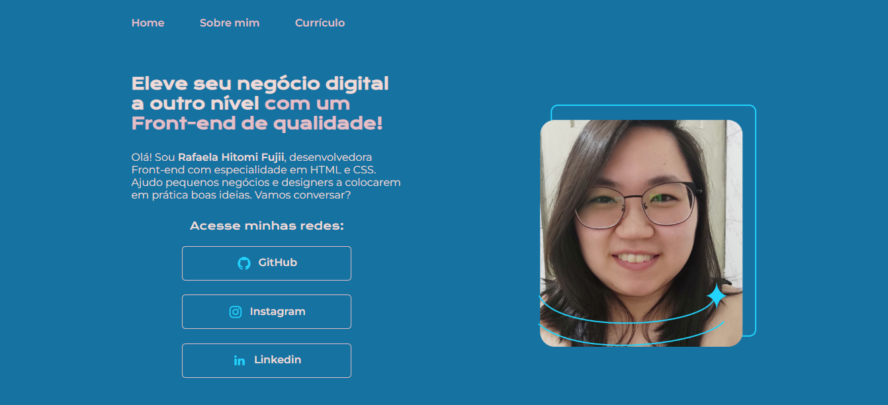
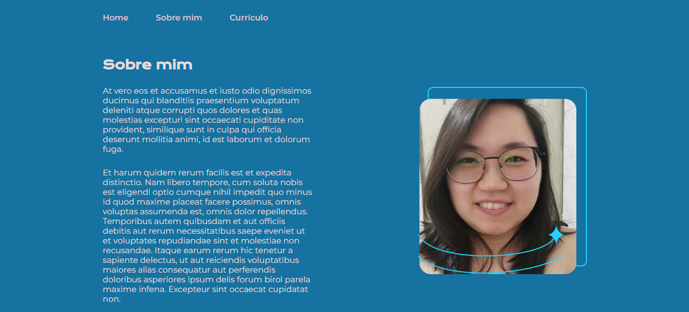
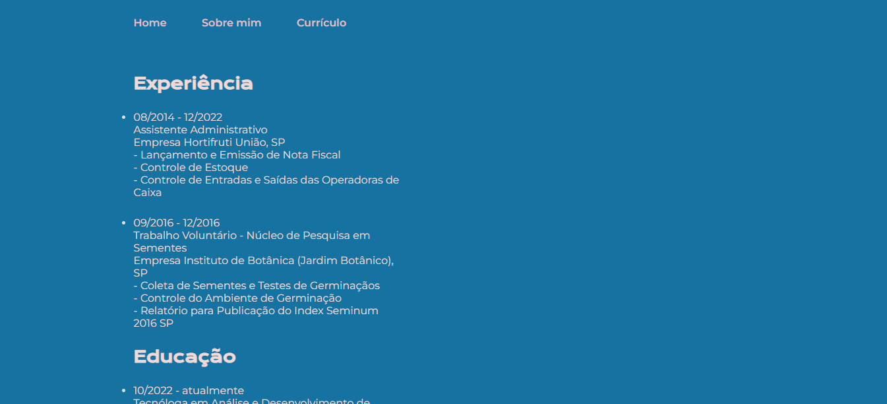

Experiência
-
08/2014 - 12/2022
Assistente Administrativo
Empresa Hortifruti União, SP
- Lançamento e Emissão de Nota Fiscal
- Controle de Estoque
- Controle de Entradas e Saídas das Operadoras de Caixa
-
09/2016 - 12/2016
Trabalho Voluntário - Núcleo de Pesquisa em Sementes
Empresa Instituto de Botânica (Jardim Botânico), SP
- Coleta de Sementes e Testes de Germinaçãos
- Controle do Ambiente de Germinação
- Relatório para Publicação do Index Seminum 2016 SP
Educação
-
10/2022 - atualmente
Tecnóloga em Análise e Desenvolvimento de Sistemas
Universidade Estácio de Sá, São Paulo, SP
-
02/2020 - 12/2021
Tecnóloga em Design Gráfico
Universidade Paulista, São Paulo, SP
Projetos
- Portfolio   